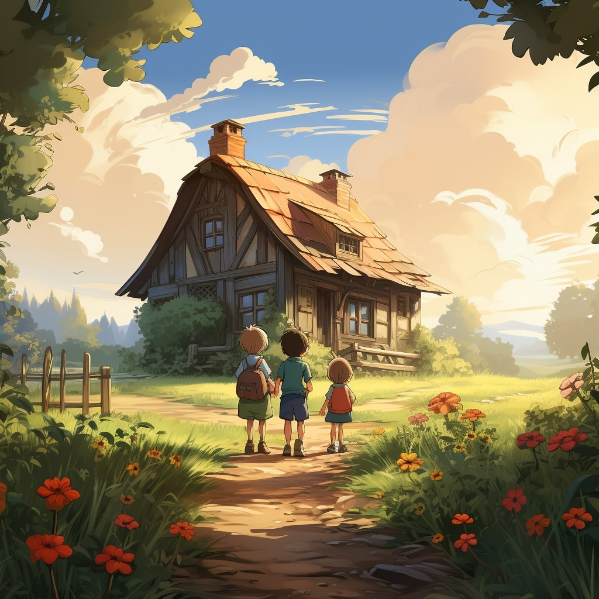

ذات مرة، في بلدة صغيرة مريحة، عاش شقيقان يدعى سارة وآدم. لقد كانوا متحمسين للغاية لأنها كانت أخيرًا عطلة الصيف، وكانوا على وشك قضاءها في منزل أجدادهم في تونس.
وبمجرد وصولهم، استقبلهم جدهم بابا أحمد بابتسامة كبيرة. لقد كان رجلاً عجوزًا حكيمًا يحب سرد القصص وتعليم أحفاده أشياء جديدة.

في صباح اليوم التالي، اصطحب بابا أحمد سارة وآدم في مغامرة خاصة إلى حقل واسع مليء بأشجار النخيل العالية. ولم يسبق لسارة وآدم رؤية أشجار النخيل عن قرب من قبل، وقد اندهشا من طولها وجمالها.
وأوضح بابا أحمد أن هذه الأشجار كانت أشجار نخيل، وكانوا سيتعلمون كل شيء عن الفاكهة اللذيذة التي تنتجها. وأراهم كيف نبت التمر في عناقيد كبيرة تتدلى من الأغصان مثل الجواهر.
أثناء سيرهما في بستان النخيل، لاحظت سارة وآدم سلالًا مليئة بالتمر الطازج. جاءت التمور بأشكال وأحجام وألوان مختلفة، ولم يكن بوسع الأشقاء إلا أن يتعجبوا من هذا التنوع.
"واو، انظر إلى كل هذه التواريخ!" صاح آدم وهو يشير إلى السلال.
- نعم بالفعل، أجاب بابا أحمد مبتسمًا، ملاحظًا انبهارهم. "كما ترون، التمور تأتي في العديد من الأصناف المختلفة، ولكل منها خصائصها الفريدة."
نظر كل من سارة وآدم إلى بعضهما البعض، وقد أثار فضولهما.
"ما هي أنواع الأصناف الموجودة؟" سألت سارة بفارغ الصبر.

ضحك بابا أحمد بهدوء قبل أن يصل إلى إحدى السلال ويختار ثلاثة أنواع مختلفة من التمر.
قال بابا أحمد وهو يقدم التمر لسارة وآدم: "لدينا هنا ثلاثة من الأصناف الرئيسية الموجودة في تونس".
قال وهو يشير إلى الدفعة الأولى من التمر الصغير الداكن: "هذه تمر عليج". "إنهم معروفون بنكهتهم الغنية وملمسهم المطاطي."
بعد ذلك، التقط بابا أحمد مجموعة من التمر الذهبي الأكبر حجمًا. وتابع: "هذه مواعيد كنتيتشا". "إنهم ذوو قيمة كبيرة بسبب مذاقهم الحلو ولحمهم الناعم والعصير."
أخيرًا، وصل بابا أحمد إلى مجموعة من التمور الأنيقة ذات اللون الكهرماني. قال وعيناه تلمعان بالفخر: ـ وهذه تمر دقلة النور. "إنها تعتبر ملكة التمور، فهي مشهورة بمذاقها الرائع وملمسها الرقيق."
حدقت سارة وآدم في التمر برهبة، متعجبين من مجموعة الألوان والأشكال التي أمامهما.
وأوضح بابا أحمد أن "كل صنف له صفاته الخاصة". "ولكن بغض النظر عن النوع الذي تختاره، فإن جميع التمور مليئة بالخيرات وتزودنا بالعناصر الغذائية المهمة."
أومأت سارة وآدم برأسيهما متفهمين، وشعرتا بالامتنان لفرصة التعرف على أنواع التمور المختلفة والحب الذي رافق زراعتها.
"ولكن هل تعرف ما الذي يميز التواريخ حقًا؟" سأل بابا أحمد وقد انخفض صوته إلى همس تآمري.
هز سارة وآدم رؤوسهما، فضوليين لمعرفة ذلك.
"حسنًا، إلى جانب كونها لذيذة بشكل لا يصدق، فإن التمر مليء أيضًا بالقوى الخارقة!" هتف بابا أحمد.
"القوى العظمى؟" سألت سارة وقد اتسعت عيناها بدهشة:
"نعم حقا!" أجاب بابا أحمد بضحكة مكتومة. "كما ترى، يحتوي التمر على ما يسمى البوليفينول، والتي تشبه الأبطال الخارقين الصغار الذين يقاتلون من أجل الحفاظ على صحتنا."
تبادلت سارة وآدم نظرات الحيرة، فقرر بابا أحمد أن يشرح أكثر.
بدأ قائلاً: "البوليفينول عبارة عن مركبات طبيعية موجودة في النباتات، مثل التمر". "لديهم قوة خاصة تسمى نشاط مضادات الأكسدة، والتي تساعد أجسامنا على البقاء قوية ومحاربة الأشياء الضارة التي تسمى الجذور الحرة."
"الشوارد الحرة؟" تساءل آدم وهو يحك رأسه.
وأوضح بابا أحمد: "نعم، الجذور الحرة تشبه مثيري المشاكل، حيث يمكن أن تسبب ضررًا لخلايانا وتصيبنا بالمرض". "لكن البوليفينول ينقض مثل الأبطال الخارقين لتحييدهم والحفاظ على صحتنا."
أضاءت عيون سارة وآدم بالفهم. "إذن، التمر مثل الفواكه السحرية التي تساعدنا على البقاء أقوياء وأصحاء؟" صرخت سارة.
"بالضبط!" قال بابا أحمد وهو يبتسم بفخر. "وتعتبر تمر دقلة النور بمثابة أبطال التمور الخارقين لأنها تتمتع بأفضل مذاق ومليئة بالبوليفينول القوي."
أومأ آدم وسارة برأسيهما في رهبة، وشعرا بالامتنان لأنهما تعلما مثل هذا السر المذهل حول التمر.

ومن ذلك اليوم فصاعدًا، كلما استمتعوا بالتمر الحلو والعصير، سيتذكرون مغامرة بابا أحمد السحرية والقوى الخارقة المخبأة داخل كل قضمة لذيذة. وسيكونون دائمًا شاكرين لحكمة وحب جدهم الاستثنائي.
لقد انتهيت من القصة.
حان الوقت للعبة الاختبار!